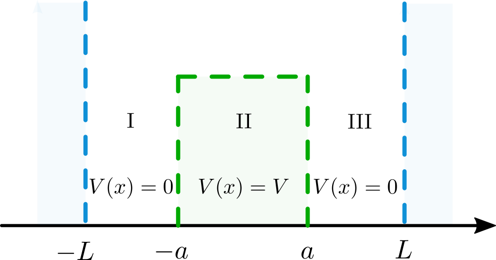

Efecto Túnel en la Caja
Contents
6.3. Efecto Túnel en la Caja#
Autoría
Esta es una contribución del Dr. Carlos Amador Bedolla, del departamento de Física y Química Teórica de la Facultad de Química, UNAM.
Este problema es continuación de la partícula en la caja y nos permite ejemplificar el efecto túnel. Para ello, planteemos una caja de \(-L\) a \(L\), con potencial infinito afuera de la caja, pero esta vez hay un tope de potencial en el centro de la caja
{kind=link}
Es decir, el potencial vale infinito en las zonas \({\rm I}\) y \({\rm V}\), cero en las zonas \({\rm II}\) y \({\rm IV}\) (de \(-L\) a \(-a\) y de \(+a\) a \(+L\)) y vale \(V\) en la zona \({\rm III}\) al centro de la caja (de \(-a\) a \(+a\)).
Particularmente estudiaremos el caso en el que la partícula tiene una energía menor al tope de potencial, \(E<V\).
Para pensar
De manera clásica, la partícula no podría pasar del lado izquierdo (región \({\rm II}\)) al lado derecho (región \({\rm IV}\)) de la caja y viceversa porque no tiene suficiente energía para atravesar la región \({\rm III}\). Por la misma razón, la probabilidad de encontrar a la partícula en la región \({\rm III}\) es cero. ¿Qué pasará cuánticamente?
La eigenfunción se obtiene resolviendo la ecuación de Schrödinger
Como se vio antes, la eigenfunción vale cero afuera de la caja. Por lo que se puede plantear la ecuación de Schrödinger por regiones.
Inserto matemático: Hamiltoniano por regiones
Si analizamos la ecuación de Schrödiger por regiones se tienen los siguientes Hamiltonianos y sus respectivas soluciones:
Región |
Hamiltoniano |
Eigenfunción |
Constantes |
|---|---|---|---|
\({\rm II}\) |
\(\left(-\frac{\hbar^2}{2m} \frac{d^2}{dx^2}\right) \psi_{\rm II}(x) = E \psi_{\rm II}(x)\) |
\(\psi_{\rm II}(x) = A \sin(k_1 x) + B\cos(k_1x)\) |
\(k_1^2 = \frac{2mE}{\hbar^2}\) |
\({\rm III}\) |
\(\left(-\frac{\hbar^2}{2m} \frac{d^2}{dx^2} + V \right) \psi_{\rm III}(x)= E \psi_{\rm III}(x)\) |
\(\psi_{\rm III}(x) = C e^{k_2 x} + De^{-k_2x}\) |
\(k_2^2 = \frac{2m(V-E)}{\hbar^2}\) |
\({\rm IV}\) |
\(\left( -\frac{\hbar^2}{2m} \frac{d^2}{dx^2}\right) \psi_{\rm IV}(x) = E \psi_{\rm IV}(x)\) |
\(\psi_{\rm IV}(x) = F \sin(k_1 x) + G \cos(k_1x)\) |
\(k_1^2 = \frac{2mE}{\hbar^2}\) |
Note que en la región \({\rm I}\) y \({\rm V}\) el potencial es infinito, por lo que \(\psi_{\rm I} = \psi_{\rm V} = 0\).
Importe las siguientes librerías
numpy
pyplot de matplotlib
optimize de scipy
integrate de scipy
# Importe librerías
import numpy as np
from matplotlib import pyplot as plt
from scipy import optimize
from scipy import integrate
Establezca valores para las constantes \(\hbar\), \(m\), \(V\), \(a\), \(L\).
# De valor a las constantes
hbar = 1
m = 1.0
V = 50.0
a = 0.2
L = 1.2
La eigenfunción y su derivada deben de ser continuas, por lo que podemos igualar la eigenfunción en el punto donde se unen las regiones, y obtener nuevas ecuaciones.
Inserto matemático: Condiciones de Frontera
Regiones |
Condición |
Ecuación |
|---|---|---|
\({\rm I}\) y \({\rm II}\) |
\(\psi_{\rm II}(-L) = 0\) |
\(B = A \tan(k_1 L)\) |
\({\rm II}\) y \({\rm III}\) |
\(\psi_{\rm II}(-a) = \psi_{\rm III}(-a)\) |
\(-A \sin(k_1 a) + B\cos(k_1 a) = C e^{-k_2a} + D e^{k_2a}\) |
\({\rm II}\) y \({\rm III}\) |
\(\frac{d\psi_{\rm II}}{dx}(-a) = \frac{d\psi_{\rm III}}{dx}(-a)\) |
\(k_1(A \cos(k_1 a) + B\sin(k_1 a)) = k_2 (C e^{-k_2a} - D e^{k_2a})\) |
\({\rm III}\) y \({\rm IV}\) |
\(\psi_{\rm III}(a) = \psi_{\rm IV}(a)\) |
\(C e^{k_2a} + D e^{-k_2a} = F \sin(k_1 a) + G \cos(k_1 a)\) |
\({\rm IV}\) y \({\rm V}\) |
\(\psi_{\rm V}(L) = 0\) |
\(G = -F \tan(k_1 L)\) |
A partir de aquí podemos ayudarnos de la simetría del problema.
6.3.1. Simetría Par#
Empezaremos asumiendo que lo que está del lado izquierdo respecto a \(x=0\) tiene simetría par respecto a lo que está del lado derecho.
Inserto matemático: Simetría par
Al imponer la simetría en la región \({\rm III}\)
La ecuación se cumple si \(C = D\), por tanto
Si dividimos la ecuación de continuidad de la derivada entre la ecuación de continuidad de la eigenfunción entre las zonas \({\rm II}\) y \({\rm III}\) se obtiene
Sustituyendo la condición de simetría par (\(C=D\)) y la continuidad entre las zonas I y II (\(B = A \tan(k_1L)\))
Simplificando
Aplicamos la identidad trigonométrica \(\frac{\tan(\theta) - \tan(\phi)}{1 + \tan(\theta)\tan(\phi)} = \tan(\theta - \phi)\)
El siguiente paso es sustituir los valores de \(k_1\) y \(k_2\).
Las energías permitidas se obtienen al resolver la ecuación
En esta ecuación no es trivial despejar \(E\), pero la igualdad sólo se cumplirá con la \(E\) correcta. Una forma más simple es elevar al cuadrado y pasar todo a la derecha, tal que definamos \(f(E)\)
Cuando se tenga el \(E\) correcto se cumplirá \(f(E) = 0\), así que sólo tenemos que buscar los ceros (o raíces) de la función.
Defina la función \(f(E)\)
# f(E)
def f(E):
arg1 = np.sqrt(2*m*(V-E)/hbar**2)*a
arg2 = np.sqrt(2*m*E/hbar**2)*(a-L)
return np.tanh(arg1)**2*np.tan(arg2)**2 - E/(V-E)
Para obtener los valores de \(E\) que hacen que \(f(E)\) se vuelva cero, cree un conjunto de puntos de \(E\) con muchos puntos entre \(0\) y \(V\), puede usar la instrucción
E_dominio = np.linspace(0,V,10000)
# E_dominio
E_dominio = np.linspace(0,V,10000)
Para cada uno de estos puntos evalúe si \(f(E)\) es menor a \(10^{-2}\), si la condición se cumple el valor de \(E\) es un buen candidato para ser una raíz de \(f(E)\). Haga una lista con los valores de E que cumplieron el criterio, este será su primer guess.
E_primerguess = []
for E_i in E_dominio:
if (abs(f(E_i))<1e-2):
E_primerguess.append(E_i)
/tmp/ipykernel_14357/383531475.py:6: RuntimeWarning: divide by zero encountered in double_scalars
return np.tanh(arg1)**2*np.tan(arg2)**2 - E/(V-E)
Python tiene funciones especiales para buscar raíces partiendo de cierto punto. La siguiente línea busca la raíz de \(f(E)\) más cercana a un punto \(E_i\)
E = newton(f,x0=E_i)
Para cada valor de energía de su primer guess, utilice el método de Newton para obtener la raíz más cercana y guárdela en una lista si la diferencia con la última raíz es mayor a 0.1. Este será su segundo guess.
E_segundoguess = [0]
for E_i in E_primerguess:
E = optimize.newton(f,x0=E_i)
if (abs(E_segundoguess[-1] - E) > 0.1 ):
E_segundoguess.append(E)
Imprima su segundo guess
# Impresión
print(E_segundoguess)
[0, 4.03702980948585, 6.183977172993017, 15.950917097849251, 25.481208577291266, 34.789304765449806]
Defina funciones para
# Defina funciones
def k1(E): return np.sqrt(2*m*E/hbar**2)
def k2(E): return np.sqrt(2*m*(V-E)/hbar**2)
Hasta aquí ya somos capaces de obtener las energías permitidas. Falta normalizar la eigenfunción y graficarla.
Inserto matemático: Análisis de las constantes \(A\), \(B\), \(C\), \(D\), \(F\) y \(G\)
Por la continuidad de la zona \({\rm II}\) y \({\rm III}\), con \(B=A\tan(k_1 L)\) y \(C=D\), se tiene
De la misma manera, la continuidad de la zona \({\rm III}\) y \({\rm IV}\) con \(G=-F \tan(k_1 L)\) y \(C=D\) nos dice
En este punto tenemos las siguientes relaciones entre los coeficientes
Coeficientes Relacionados |
Relación |
|---|---|
\(A\) y \(B\) |
\(B = A \tan(k_1 L)\) |
\(A\) y \(C\) |
\(A = C \left(\frac{e^{k_2a} + e^{-k_2a}}{-\sin(k_1 a) + \tan(k_1L)\cos(k_1a)}\right)\) |
\(C\) y \(D\) |
\(C = D\) |
\(F\) y \(G\) |
\(G = -F \tan(k_1 L)\) |
\(F\) y \(C\) |
\(F = C \left(\frac{ e^{k_2a} + e^{-k_2a} }{\sin(k_1 a) - \tan(k_1L) \cos(k_1a)}\right)\) |
Note que es posible poner todo en función de \(C\). Además note que \(A = -F\) y \(B = G\). El valor de \(C\) debe ser aquel que haga que la eigenfunción este normalizada. Aunque es posible obtener una función analítica, aquí tomaremos un camino numérico.
Defina funciones para
# Defina funciones
def psi_II(x): return (np.exp(-k2(E)*a)+np.exp(k2(E)*a))/(-np.sin(k1(E)*a)+np.tan(k1(E)*L)*np.cos(k1(E)*a))*(np.sin(k1(E)*x)+np.tan(k1(E)*L)*np.cos(k1(E)*x))
def psi_III(x): return np.exp(k2(E)*x)+np.exp(-k2(E)*x)
def psi_IV(x): return (np.exp(k2(E)*a)+np.exp(-k2(E)*a))/(np.sin(k1(E)*a)-np.tan(k1(E)*L)*np.cos(k1(E)*a))*(np.sin(k1(E)*x)-np.tan(k1(E)*L)*np.cos(k1(E)*x))
Cree tres dominios de 1000 puntos para la eigenfunción, tal que
# x_II, x_III y x_IV
x_II = np.linspace(-L,-a,10000)
x_III = np.linspace(-a,a,10000)
x_IV = np.linspace(a,L,10000)
Utilice las energías del segundo guess para graficar las eigenfunciones. Recuerde respetar la normalización.
for E in E_segundoguess:
if(E>0):
norm2 = 0.0
norm2 = norm2 + integrate.quad(lambda x: psi_II(x)*psi_II(x), -L, -a)[0]
norm2 = norm2 + integrate.quad(lambda x: psi_III(x)*psi_III(x), -a, a)[0]
norm2 = norm2 + integrate.quad(lambda x: psi_IV(x)*psi_IV(x), a, L)[0]
plt.plot(x_II,psi_II(x_II)/np.sqrt(norm2))
plt.plot(x_III,psi_III(x_III)/np.sqrt(norm2))
plt.plot(x_IV,psi_IV(x_IV)/np.sqrt(norm2))
prob = integrate.quad(lambda x: psi_III(x)*psi_III(x), -a, a)[0]/norm2
print("E: " + str(E) + " Probabilidad de [-a,a]: " + str(prob))
plt.plot(x_II,psi_II(x_II)*psi_II(x_II)/norm2)
plt.plot(x_III,psi_III(x_III)*psi_III(x_III)/norm2)
plt.plot(x_IV,psi_IV(x_IV)*psi_IV(x_IV)/norm2)
plt.show()
E: 4.03702980948585 Probabilidad de [-a,a]: 0.009171376328832647

E: 6.183977172993017 Probabilidad de [-a,a]: 0.017525687126182975
E: 15.950917097849251 Probabilidad de [-a,a]: 0.04344512067766844

E: 25.481208577291266 Probabilidad de [-a,a]: 0.09411665657854962
E: 34.789304765449806 Probabilidad de [-a,a]: 0.13886978965910068

6.3.2. Simetría impar#
Empezaremos asumiendo que lo que esta del lado izquierdo de \(x=0\) tiene simetría impar respecto a lo que está del lado derecho.
Inserto matemático: Simetría impar
Al imponer la simetría en la región III
La ecuación se cumple si \(C = -D\), por \tanto
Si dividimos la ecuación de continuidad de la derivada entre la ecuación de continuidad de la eigenfunción entre las zonas \({\rm II}\) y \({\rm III}\) se obtiene
Sustituyendo la condición de simetría par (\(C=-D\)) y la continuidad entre las zonas \({\rm I}\) y \({\rm II}\) (\(B = A \tan(k_1L)\))
Simplificando
Aplicamos la identidad trigonométrica \(\frac{\tan(\theta) - \tan(\phi)}{1 + \tan(\theta)\tan(\phi)} = \tan(\theta - \phi)\)
El siguiente paso es sustituir los valores de \(k_1\) y \(k_2\).
Al considerar esta condición en las ecuaciones de continuidad, se obtiene la siguiente ecuación
En esta ecuación no es trivial despear E, pero la igualdad solo se cumplirá con la \(E\) correcta. Una forma más simple es elevar al cuadrado y pasar todo a la derecha, tal que definamos \(f(E)\)
Cuando se tenga el \(E\) correcto se cumplirá \(f(E) = 0\), así que solo tenemos que buscar los ceros (o raíces) de la función.
Defina la función \(f(E)\)
def f(E):
arg1 = np.sqrt(2*m*(V-E)/hbar**2)*a
arg2 = np.sqrt(2*m*(E)/hbar**2)*(a-L)
return (1/np.tanh(arg1))**2*np.tan(arg2)**2 - E/(V-E)
Obtenga su guess de valores de energía
Tip
Genere un conjunto de 1000 puntos de \(E\) de \(0\) a V
Seleccione aquellos para los que \(f(E)\) es menor que \(10^{-2}\)
Utilice el método de Newton para obtener valores únicos de energía
E_dominio = np.linspace(0,V,10000)
E_primerguess = []
for E in E_dominio:
if (abs(f(E))<1e-2):
E_primerguess.append(E)
E_segundoguess = [0]
for E in E_primerguess:
E_i = optimize.newton(f,x0=E)
if (abs(E_segundoguess[-1] - E_i) > 0.1 ):
E_segundoguess.append(E_i)
/tmp/ipykernel_14357/2773694175.py:5: RuntimeWarning: divide by zero encountered in double_scalars
return (1/np.tanh(arg1))**2*np.tan(arg2)**2 - E/(V-E)
/tmp/ipykernel_14357/2773694175.py:5: RuntimeWarning: invalid value encountered in double_scalars
return (1/np.tanh(arg1))**2*np.tan(arg2)**2 - E/(V-E)
Hasta aquí ya somos capaces de obtener las energías permitidas. Falta normalizar la eigenfunción y graficarla.
Inserto matemático: Análisis de las constantes \(A\), \(B\), \(C\), \(D\), \(F\) y \(G\)
Por la continuidad de la zona \({\rm II}\) y \({\rm III}\), con \(B=A\tan(k_1 L)\) y \(C=-D\), se tiene
De la misma manera, la continuidad de la zona \({\rm III}\) y \({\rm IV}\) con \(G=-F \tan(k_1 L)\) y \(C=-D\) nos dice
En este punto tenemos las siguientes relaciones entre los coeficientes
Coeficientes Relacionados |
Relación |
|---|---|
\(A\) y \(B\) |
\(B = A \tan(k_1 L)\) |
\(A\) y \(C\) |
\(A = C \left(\frac{e^{k_2a} - e^{-k_2a}}{-\sin(k_1 a) + \tan(k_1L)\cos(k_1a)}\right)\) |
\(C\) y \(D\) |
\(C = - D\) |
\(F\) y \(G\) |
\(G = -F \tan(k_1 L)\) |
\(F\) y \(C\) |
\(F = C \left(\frac{ e^{k_2a} - e^{-k_2a} }{\sin(k_1 a) - \tan(k_1L) \cos(k_1a)}\right)\) |
Note que es posible poner todo en función de \(C\). Además note que \(A = E\) y \(B = -F\). El valor de \(C\) debe ser aquel que haga que la eigenfunción esté normalizada. Aunque es posible obtener una función analítica, aquí tomaremos un camino numérico.
Defina funciones para:
# Funciones
def psi_II(x): return (np.exp(-k2(E)*a)-np.exp(k2(E)*a))/(-np.sin(k1(E)*a)+np.tan(k1(E)*L)*np.cos(k1(E)*a))*(np.sin(k1(E)*x)+np.tan(k1(E)*L)*np.cos(k1(E)*x))
def psi_III(x): return np.exp(k2(E)*x)-np.exp(-k2(E)*x)
def psi_IV(x): return (np.exp(k2(E)*a)-np.exp(-k2(E)*a))/(np.sin(k1(E)*a)-np.tan(k1(E)*L)*np.cos(k1(E)*a))*(np.sin(k1(E)*x)-np.tan(k1(E)*L)*np.cos(k1(E)*x))
Realice las gráficas de la eigenfunción
# Gráficas
for E in E_segundoguess:
if(E>0):
norm = 0.0
norm = norm + integrate.quad(lambda x: psi_II(x)*psi_II(x), -L, -a)[0]
norm = norm + integrate.quad(lambda x: psi_III(x)*psi_III(x), -a, a)[0]
norm = norm + integrate.quad(lambda x: psi_IV(x)*psi_IV(x), a, L)[0]
plt.plot(x_II,psi_II(x_II)/np.sqrt(norm))
plt.plot(x_III,psi_III(x_III)/np.sqrt(norm))
plt.plot(x_IV,psi_IV(x_IV)/np.sqrt(norm))
prob = integrate.quad(lambda x: psi_II(x)*psi_II(x), -a, a)[0]/norm
print("E: " + str(E) + " Probabilidad de [-a,a]: " + str(prob))
plt.plot(x_II,psi_II(x_II)*psi_II(x_II)/norm)
plt.plot(x_III,psi_III(x_III)*psi_III(x_III)/norm)
plt.plot(x_IV,psi_IV(x_IV)*psi_IV(x_IV)/norm)
plt.show()
E: 4.098118934645123 Probabilidad de [-a,a]: 0.06152438345572405

E: 6.062762952515444 Probabilidad de [-a,a]: 0.29151676557600037

E: 16.302766510025553 Probabilidad de [-a,a]: 0.1553139426950121

E: 24.50996443721989 Probabilidad de [-a,a]: 0.21637118642172976

E: 36.30141253472844 Probabilidad de [-a,a]: 0.1767475720645189
Pregunta
Si la partícula tiene energía menor que V, la probabilidad de encontrarla en el intervalo [-a,a] es cero.
Mostrar respuesta
Falso
La probabilidad es distinta de cero por el efecto túnel, como se ha visto en estos ejercicios.
6.4. Referencias#
V.W.D. Cruzeiro, X. Gao, y V.D. Kleiman, Implementing New Educational Platforms in the Classroom: An Interactive Approach to the Particle in a Box Problem, J. Chem. Educ. 96, 1663 (2019).
J.P. Lowe y K. Peterson, Quantum Chemistry (Academic Press, 2006).